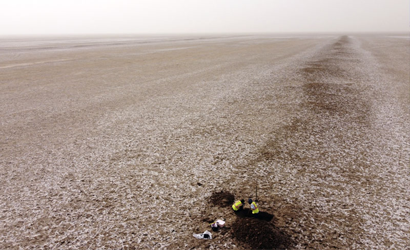
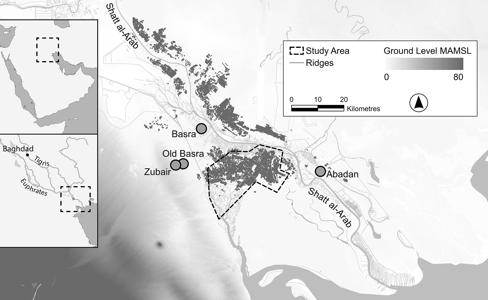
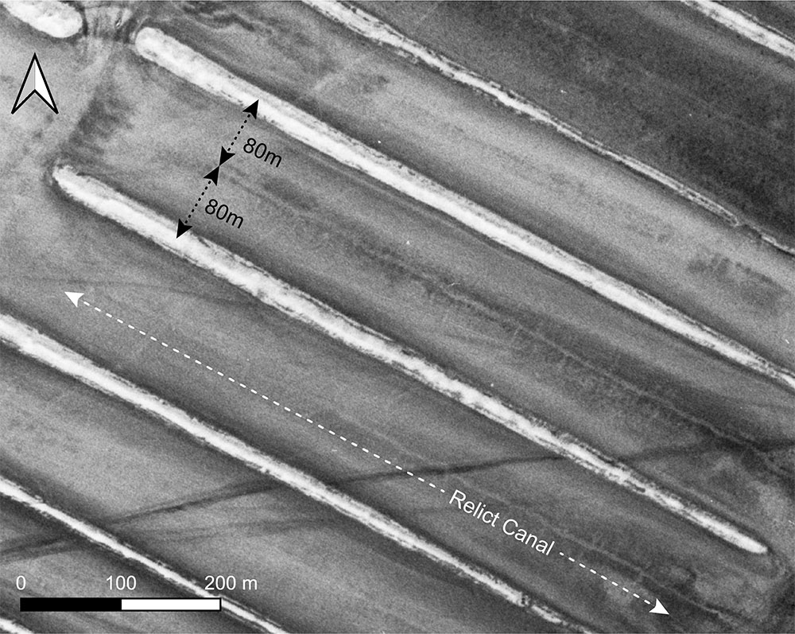
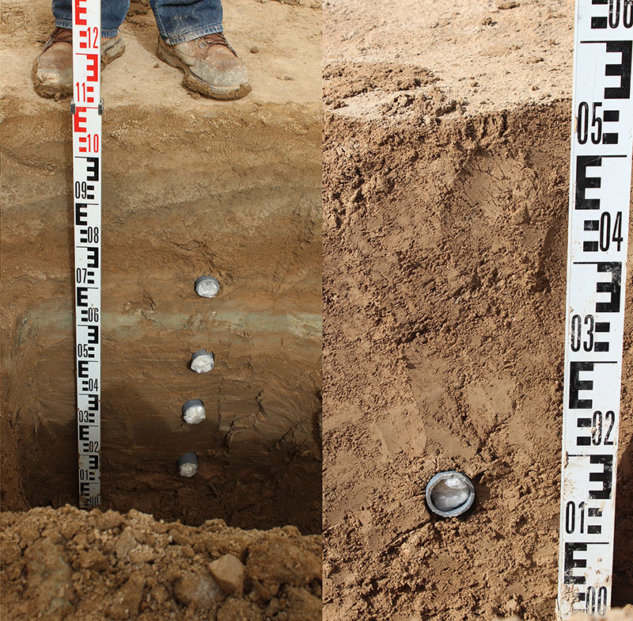
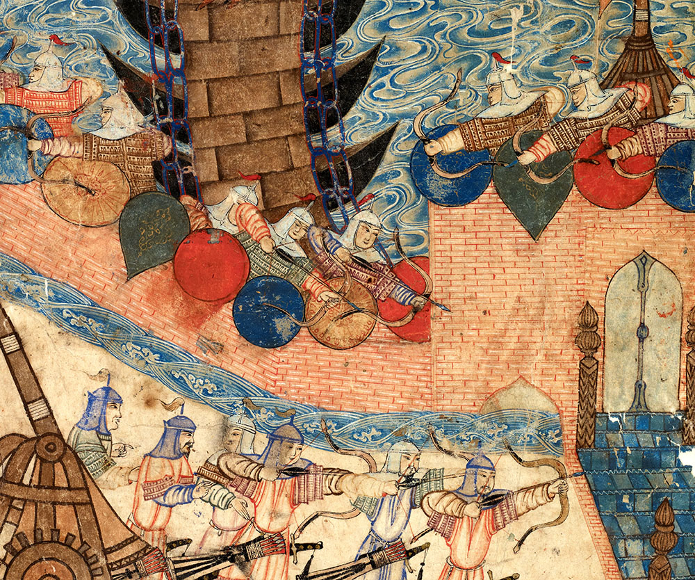
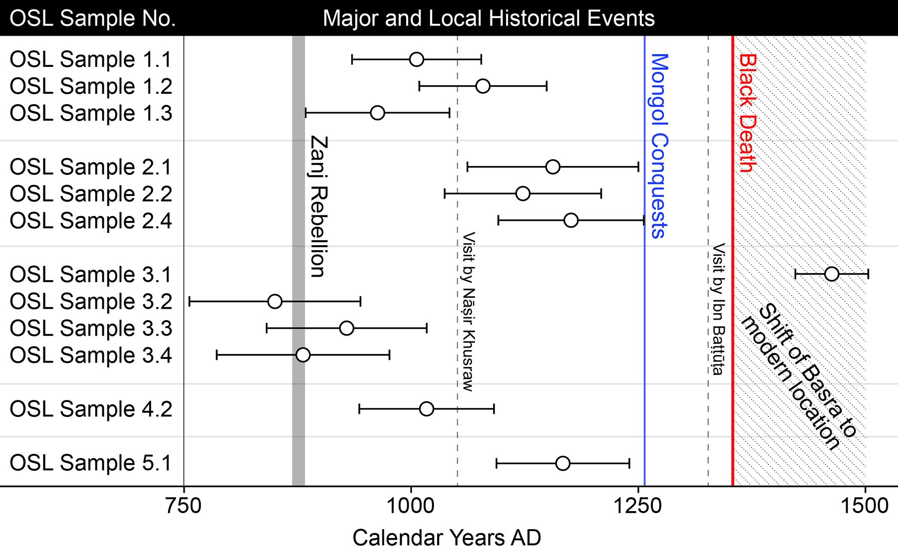

The landscape of the Zanj rebellion?
June 2, 2025Below is a summary of my recent research paper published in Antiquity. Read the full paper here.
Across the floodplain of the Shatt al-Arab river in southern Iraq, over 7000 linear ridges, formed of piled up earth, lie across a largely abandoned landscape covering an area of around 800km2. These ridges are massive - many are more than 1 km in length - and the remains of old canals are found in amongst them. These features relate to the irrigation of a large area for arable farming at some point in the past. Until now, however, exactly when this agricultural system was cultivated and why it was abandoned have gone unconfirmed.
Historical texts record a slave rebellion in the region in the late 9th century CE. Scholars have often suggested the ridges visible in the landscape today were created by these slaves and that the hard work required to erect the ridges and farm this landscape may even have been what provoked the rebellion. In the same period, the neighbouring city of Basra seems to have reached a peak in terms of population and commercial activity. Farming a large area would have been necessary both to feed the large urban population as well as to produce agricultural products for export to other cities and overseas.
Recent archaeological fieldwork conducted through a collaboration between researchers at Radboud University, the Netherlands, the universities of al-Qadisiyah and Basra, Iraq, and the universities of Newcastle and Durham, United Kingdom, have significantly enhanced our understanding of this agricultural landscape. Researchers retrieved soil samples buried deep within several of the ridges. These samples were then analysed using a scientific method called Optically Stimulated Luminescence dating. This method allows the calculation of the length of time since individual grains contained within soils were exposed to sunlight. In the case of the ridges in southern Iraq, the results of this analysis give the date when these ridge features were under construction - or when the soils within them were buried and hidden from sunlight.
The results of this research reveal that the soils sampled in the ridges accumulated shortly after the slave rebellion recorded in the texts, in some cases likely just several decades afterwards. The close association in time between the sampled ridges and the events described in the historical texts means that some of these landscape features very likely existed before the rebellion. The results, therefore, strengthen the link with the slave rebellion which had often previously been assumed but without definitive proof. Perhaps more importantly, however, the results also reveal that the ridge features continued to accumulate for several centuries in the aftermath of the slave rebellion. This means the slave rebellion itself was not the ultimate cause of abandonment. At this stage, it is impossible to say exaclty why this large agricultural system was abandoned but possible explanations include political and economic disruption caused by the invasion of the Mongols in the 13th century, the impact of plague in the 14th century, and climatic change - which could have resulted in a reduction in the amount of water available for farming in the region.
